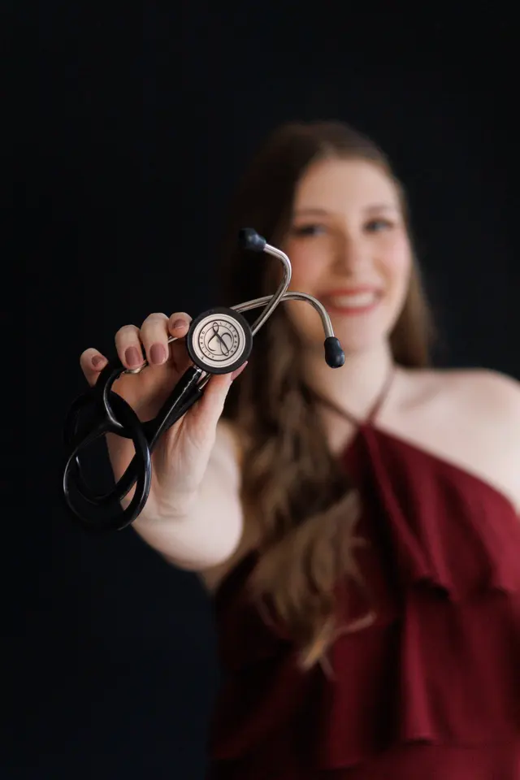
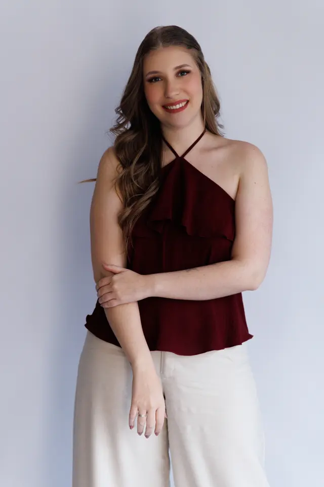
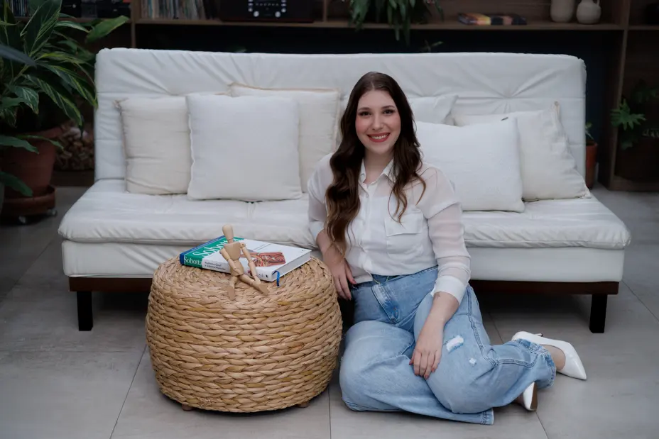
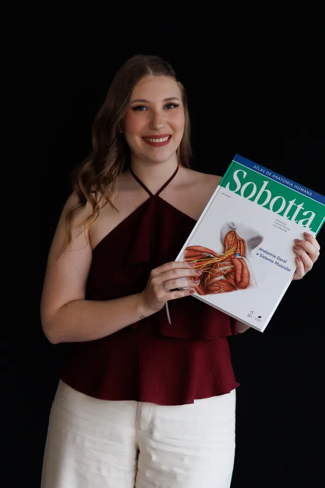

nº 1
Sair de casa já cansa.
Para quem sente dor, usa andador ou acabou de operar, o caminho até a clínica gasta a energia que deveria ir para a sessão.
Fisioterapia domiciliar · [CIDADE]
Atendo idosos, pessoas em recuperação de cirurgia e quem quer praticar Pilates — na sala, no quarto, na varanda. É onde a vida acontece, então é ali que a gente treina.

nº 1
Para quem sente dor, usa andador ou acabou de operar, o caminho até a clínica gasta a energia que deveria ir para a sessão.
nº 2
Acontece no tapete do corredor, no box do banheiro, no degrau da varanda. Em casa eu treino exatamente esses lugares — e ajudo a deixá-los mais seguros.
nº 3
Sem dividir atenção com outros pacientes, sem aparelho no automático. Cada encontro é pensado para você, do começo ao fim.
nº 4
Quem cuida aprende junto: como ajudar a levantar, como incentivar os exercícios, o que observar no dia a dia.
Atendimentos
para idosos
Para continuar fazendo, com autonomia, as coisas que importam.
“Ser idoso não significa ficar preso dentro de uma torre.”
pós-cirurgia
Voltar a se mexer com segurança, desde os primeiros dias.
“Recuperar também é cuidar de cada movimento.”
pilates
O método, sem precisar ir até o estúdio.
“O Pilates é fácil? Vem descobrir.”

Como funciona
Me conta um pouco da situação. Eu respondo, tiro suas dúvidas e combinamos o melhor dia.
Converso com o paciente e a família, faço os testes necessários e observo o ambiente: escadas, tapetes, banheiro, cama.
Objetivos claros e frequência de sessões definida junto com vocês. Nada de protocolo pronto.
Sessões, orientações para os dias sem fisio e reavaliações para vocês enxergarem a evolução.
Ninguém se recupera sozinho. Por isso, em todo atendimento, a família também faz parte do tratamento.


Sou fisioterapeuta e instrutora de Pilates. Escolhi atender em domicílio porque acredito que o cuidado fica mais verdadeiro quando acontece onde a pessoa vive: perto da família, das coisas dela, da rotina dela.
Cada atendimento começa ouvindo — a história, os medos, as vontades. Às vezes a meta é voltar a caminhar até a padaria; às vezes é levantar do sofá sem ajuda. Toda meta é importante quando é sua.
Fisioterapia, pra mim, é isso: propósito e coração.
Rafaela Brigato Moraes
Fisioterapeuta · CREFITO-3/454191-F
Dúvidas frequentes
Não achou a sua? Me chama no WhatsApp — respondo pessoalmente.
Não é obrigatório: o fisioterapeuta tem autonomia para avaliar e tratar. Se você tiver exames, laudos ou orientações do médico (principalmente no pós-operatório), separe para a avaliação — eles ajudam muito.
Atendo em [CIDADE E REGIÃO]. Mora perto e não viu seu bairro? Me chama que a gente vê.
Não. Eu levo os materiais necessários. Só precisamos de um espaço livre — pode ser a sala, o quarto ou a varanda.
Em média [DURAÇÃO]. O tempo é todo dedicado a você.
Depende do objetivo e da condição de cada pessoa. Definimos juntos depois da avaliação.
O atendimento é particular, e eu emito recibo para você pedir reembolso ao seu plano, quando ele oferecer essa opção.
Pode e é muito bem-vindo. A família ajuda a manter os exercícios e os cuidados no dia a dia.
Os valores dependem do tipo de atendimento e da frequência. Me chama no WhatsApp que eu te passo tudo certinho.
uma mensagem pra você
Me manda uma mensagem contando quem precisa de cuidado e o que está acontecendo. Eu mesma respondo.
Chamar no WhatsApp